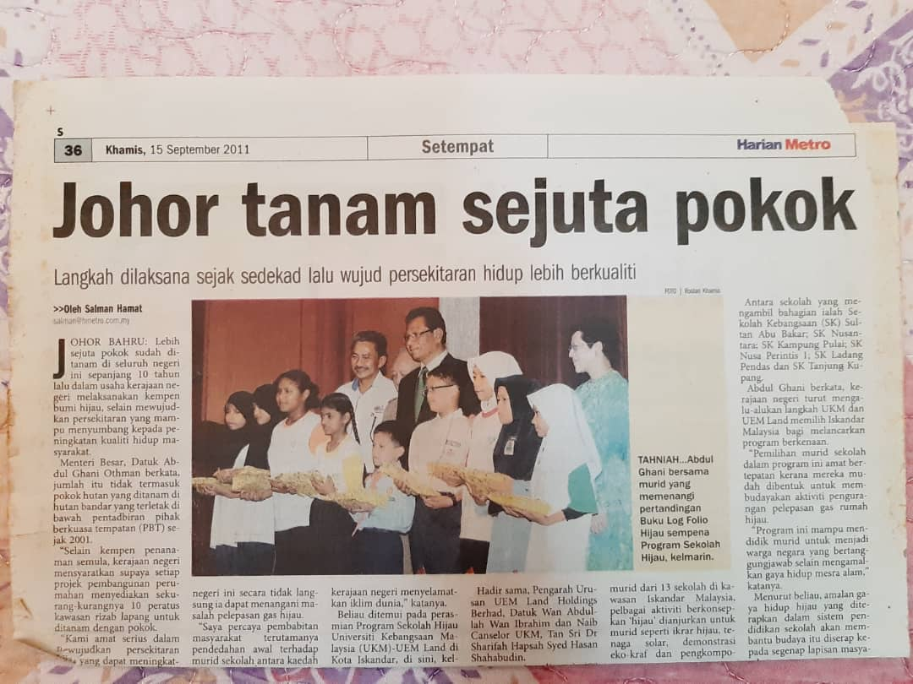
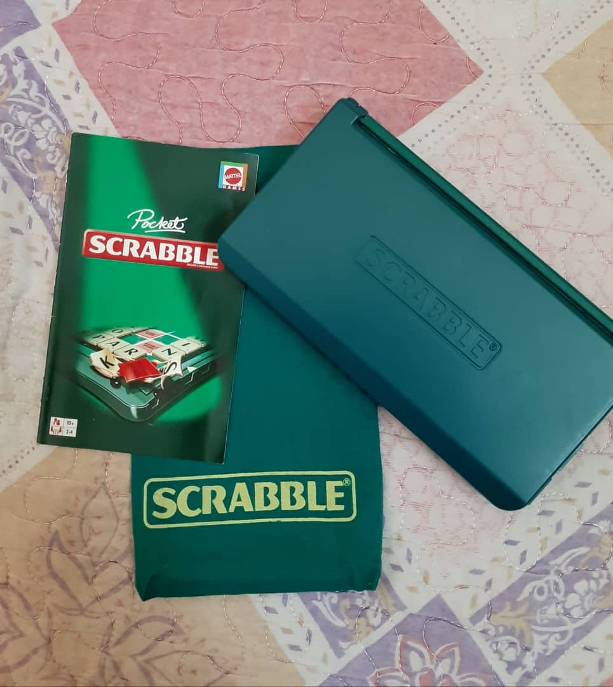

MY EXPERIENCE 🌠

Now let me share with you about my experienced of being one of the winner of the Green Folio Log Book Competition in conjunction with the Green School Program University Kebangsaan Malaysia (UKM)-UEM Land that being held at Kota Iskandar, Gelang Patah, Johor in 2011 when I was studying at Sekolah Kebangsaan Kompleks Sultan Abu Bakar, Johor. I am so thankful and grateful because having a supportive family and cousin that helps me during finishing the log book on my own. It have the specific date on when the log book need to be submitted to the teacher. The teacher that being in-charge to handle this event at every selected primary school is a teachers who teach life skills subjects.

Actually, I didn't expect that I will win because I didn't set a high hope to win this competition. All I target is to finished the task before the due date. The prize that I got is on the picture above which is a set of pocket Scrabble magnet board. How I know that I become one of the winner of this competition? It is began when in the morning official assembly, my school principal was giving her speech and I am not focus on that speech. What I can realised from her speech is she mentioned my name and I was so shocked like I am wondering if I have done something. Everyone was looking at me especially my classmate. I am so scared if I was doing any mistake but turn out my school principle said that I have won the log book competition and I am really did not expected that news. I am so happy because all of my hardwork and effort have paid off. I am so thankful to my cousin because she helps me by sending to me some pictures that can be put inside the log book and also to my family because they understand what I am doing and I am so grateful for that. It have become one of the most happiness experienced ever that I got in my life.